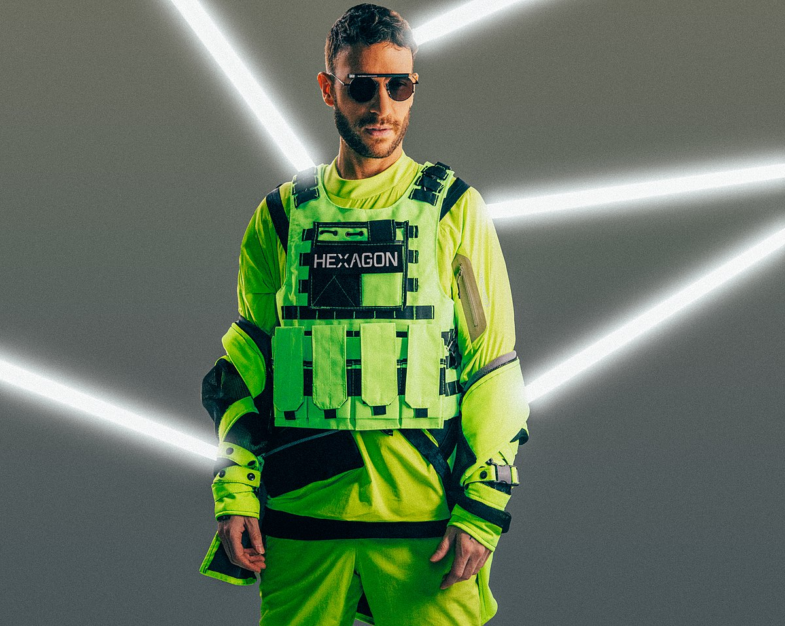
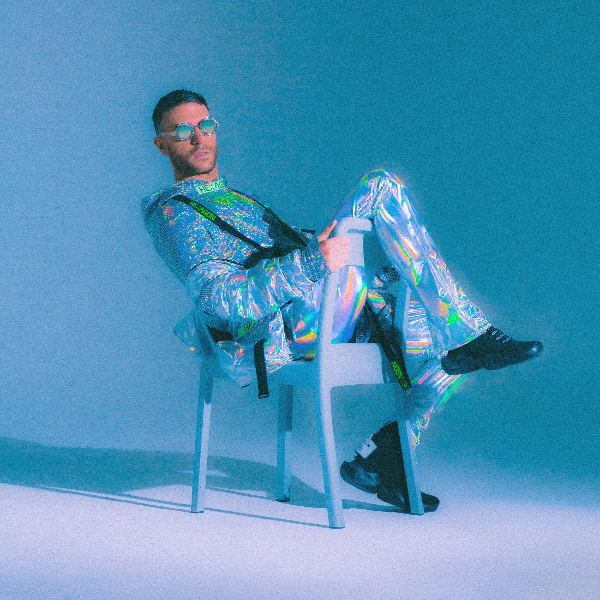

Papi Don Diablo
Making an explosive entrance into the NFT scene back in March 2021, Don has become renowned for creating crypto-artwork that bridges the gap between the physical and digital world, effortlessly combining his forward-thinking vision with a hint of nostalgia. Currently one of the highest-selling crypto artists in the world, Don carved a name for himself as a true pioneer of the space with the release of his GΞNΞSIS NFT – holographic 1 of 1 piece - and DΞSTINATION HΞXAGONIA – the world’s first ever full-length digital concert film NFT. Making history, ‘DΞSTINATION HΞXAGONIA’ sold within four minutes on esteemed crypto art platform SuperRare for 600Ξ ($1.2 million) instantly breaking the primary sales record. Most recently, Don’s revolutionary approach to the digital art realm saw his third NFT – INFINITΞ FUTURΞ – included in Sotheby’s ‘Natively Digital: A Curated NFT Sale’ – the first time a major auction house has brought a collection of leading NFT artists to auction. Soon Don will unveil his first solo piece at Sotheby’s which is set to turn more heads in the space as he keeps pushing the boundaries.
An inspiration to many, Don’s unique style has seen him carve a name for himself in fashion, with his self-designed HEXAGON clothing line. A testament to his fashion credentials, in 2018 Don worked together with Disney and LucasFilm to launch an official Star Wars x HEXAGON capsule clothing line at ‘De Bijenkorf’, following in the footsteps of other guest designers such as Lewis Hamilton and The Hadids. Signalling the beginning of his foray into the fashion realm, this was momentous first collaboration for the designer, with a second drop with the movie franchise set to launch exclusively via StockX this September.
An artist in the truest sense of the word, it’s safe to say that Don’s creative vision knows no bounds. Combining both his writing and artistic skills, the revolutionary creator took to the 2019 New York Comic Con to unveil his semi-autobiographical, sci-fi HEXAGON comic book series hitting the shelves in March 2020, Don went on to announce another ground-breaking partnership with major publishing portal Webtoon for the HEXAGON interactive series in November.
Musica Electronica
Continuing his philanthropic endeavours, June 2021 saw Don Diablo and non-profit organisation Justdiggit launch their innovative #STREAMTOREGREEN initiative, with the release of first single ‘Too Much To Ask’ ft. Ty Dolla $ign. Donating all income from streams of the single to aid the organisation’s amazing environmental work, Don was invited to introduce the project at the United Nations Virtual Launch Gala, speaking alongside world leaders, activists and celebrities including Pakistan’s Prime Minister Imran Khan, Germany’s Chancellor Angela Merkel, and His Holiness Pope Francis.
To step inside the mind of Don Diablo is to step inside the future. The Dutch visionary demonstrates a total immersion in his craft that has seen him challenge perceptions and break down creative boundaries with his numerous endeavours across the music, art, fashion and tech realms. Displaying an almost prophetic ability to tap into future trends, the forward-thinking Digital Artist refuses to be pigeonholed by just one avenue of his illustrious career.
Currently voted the world’s #9 DJ on the prestigious DJ MAG Top 100, the sought-after producer has collaborated with and remixed a wide range of artists including Dua Lipa, Justin Bieber, Gucci Mane, Ed Sheeran, Mark Ronson, Travis Barker, Miley Cyrus, Rihanna, Madonna, Ty Dolla $ign, The Chainsmokers, Coldplay and many more. Ever the perfectionist, the last couple of years has seen Don prepare his third studio album FORΞVΞR, set for release in September 2021. Taking on many forms since its inception, the album has been a labour of love for the perfectionistic Dutchman, marking his ever-evolving sound and ability to approach new genres with familiarity.
Whilst Don’s outstanding contribution to the electronic music scene has not gone unrecognised, to focus solely on Don’s - albeit phenomenal - music career is to do a disservice to a man who is consistently seeking to revolutionise every aspect of the cultural space he inhibits. Don is the embodiment of the future, and this modern approach is prevalent in everything he does - whether that’s through his futuristic aesthetic, or his creative output.
Evolucion
Making an explosive entrance into the NFT scene back in March 2021, Don has become renowned for creating crypto-artwork that bridges the gap between the physical and digital world, effortlessly combining his forward-thinking vision with a hint of nostalgia. Currently one of the highest-selling crypto artists in the world, Don carved a name for himself as a true pioneer of the space with the release of his GΞNΞSIS NFT – holographic 1 of 1 piece - and DΞSTINATION HΞXAGONIA – the world’s first ever full-length digital concert film NFT. Making history, ‘DΞSTINATION HΞXAGONIA’ sold within four minutes on esteemed crypto art platform SuperRare for 600Ξ ($1.2 million) instantly breaking the primary sales record. Most recently, Don’s revolutionary approach to the digital art realm saw his third NFT – INFINITΞ FUTURΞ – included in Sotheby’s ‘Natively Digital: A Curated NFT Sale’ – the first time a major auction house has brought a collection of leading NFT artists to auction. Soon Don will unveil his first solo piece at Sotheby’s which is set to turn more heads in the space as he keeps pushing the boundaries.